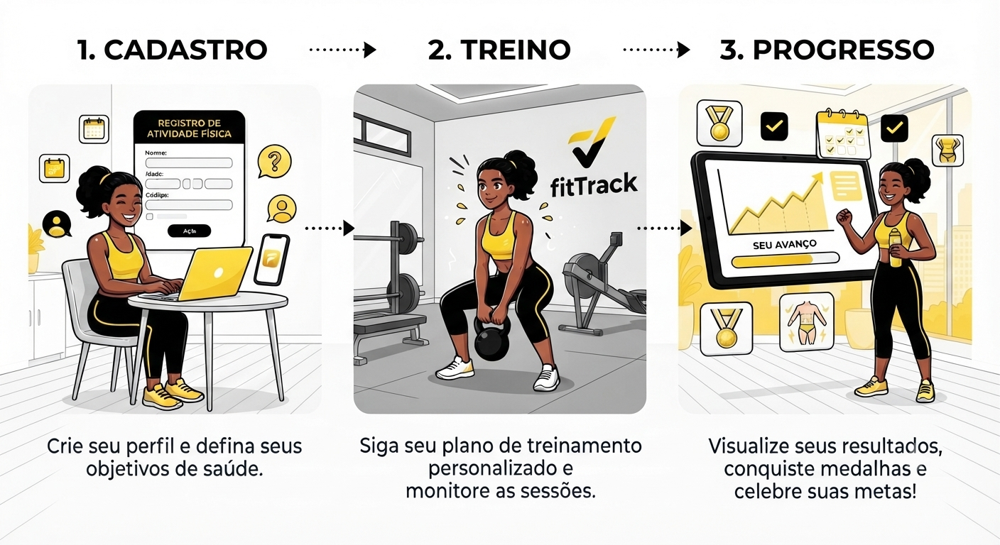
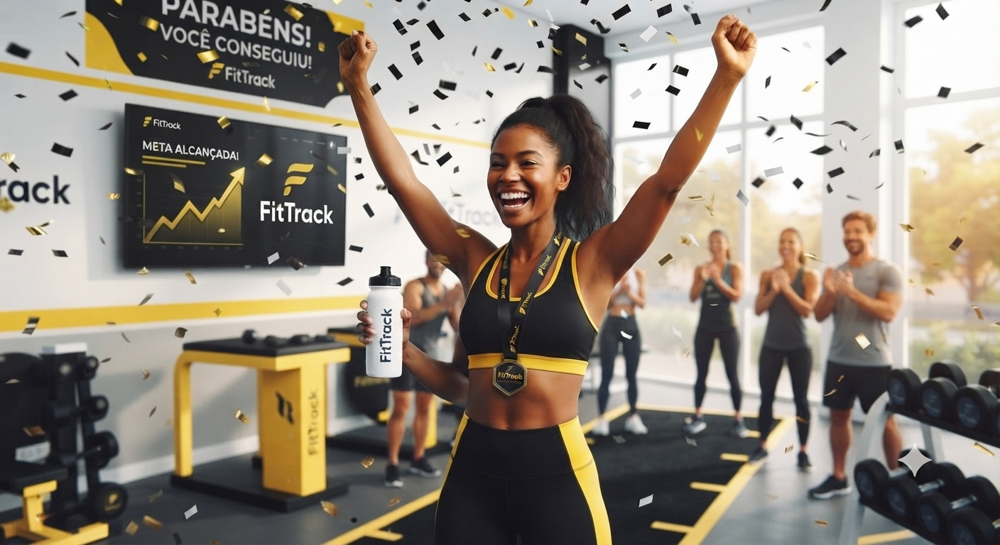

Transforme seus treinos em resultados
Postado em 21 de julho de 2026
Organize seus treinos, acompanhe sua evolução e mantenha a disciplina todos os dias com uma plataforma criada para quem quer evoluir de verdade.
Um treino de cada vez
Registre o que fez hoje e acompanhe sua constância.
Os dados ficam neste navegador, sem precisar de conta.
Seu primeiro treino começa este histórico. Registre acima!
De segunda a domingo. Cada dia conta uma vez.
Controle seu intervalo entre as séries.


Organize seus treinos, acompanhe sua evolução e mantenha a disciplina todos os dias com uma plataforma criada para quem quer evoluir de verdade.
O FitTrack foi desenvolvido para simplificar sua rotina de treinos. Em um único lugar, você organiza exercícios, acompanha seu desempenho e visualiza sua evolução ao longo do tempo.
Mais do que registrar informações, a plataforma incentiva a criação de hábitos saudáveis por meio de metas, acompanhamento contínuo e uma experiência prática e intuitiva.



Não espere a motivação aparecer. Organize seus treinos, acompanhe seus resultados e transforme a disciplina em hábito.
Começar Agora